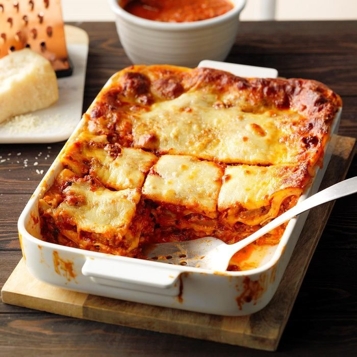

Lasagna

Mouth Watering Lasagna
A delicious mouth watering Lasagna recipe just like momma
used to make. This recipe will take 3-4 hours to make and
an hour to let stand and cool. Makes 15 servings and is
perfect for family dinners and for get togethers. This is
the perfect meal for christmas time and is sure to fill you
up and satisfy.
Ingredients
- 1 medium onion,chopped
- 2 tablespoons olive oil
- 4 garlic cloves, minced
- 1 can (6 ounces) tomato paste
- 2 cans (28 ounces) crushed tomatos in puree
- 6 cups water
- 1 cup chopped fresh basil
- 2-1/4 teaspoons sugar, divided
- 1 teaspoon salt
- 1 pound bulk Italian sausage
- 4 italian sausage links
- 1 carton (16 ounces) whole milk ricotta cheese
- 8 cups shredded mozzarella cheese, divided
- 1 large egg beaten
- 1/4 teaspoon dried basil
- 12 sheets no-cook lasagna noodles
- 21 slices provolone cheese
- 1/3 cup grated Parmesan cheese
Steps
- In a Dutch oven, cook onion in olive oil over
medium heat until tender, 4-5 minutes. Add garlic;
cook 1 minute. Stir in tomato paste and cook,
stirring constantly, until fragrant, 3-4 minutes.
Add crushed tomatoes, water, fresh basil, 2 teaspoons
sugar and salt. Bring to a boil; reduce heat. Simmer
1 hour, stirring occasionally.
- Meanwhile, cook bulk sausage in a skillet over medium
heat until no longer pink, breaking into crumbles, 8-10
minutes; drain. Add to sauce; simmer until mixture is
thickened, about 1 hour longer.
- While sauce simmers, preheat oven to 350°. Place sausage
links on a rimmed baking sheet; roast until cooked through,
35-40 minutes. Remove and let cool slightly; slice into
1/4-in.-thick pieces.
- In a small bowl, mix ricotta cheese, 1 cup mozzarella cheese,
egg, dried basil and remaining 1/4 teaspoon sugar.
- In a greased 13x9-in. baking dish, spread 2 cups sauce. Arrange
4 noodles over sauce; spread with a third of the ricotta mixture.
Add 7 provolone slices, a third of the sliced sausage and 1-1/2
cups mozzarella cheese. Repeat layers 2 more times, using only
1 cup sauce per layer. Spread with 2 cups sauce (reserve remaining
sauce for serving on the side), remaining 2-1/2 cups mozzarella
cheese and the Parmesan cheese (dish will be full).
- Place dish on a rimmed baking sheet and bake, uncovered, until
bubbly and deep golden brown, 60-65 minutes. Let stand 15 minutes
before serving. Serve with remaining meat sauce.